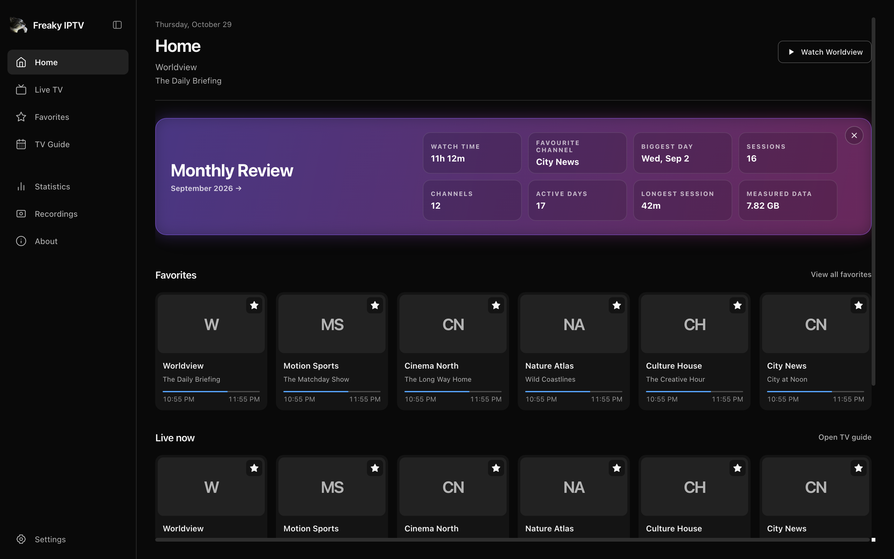

A guide worth
exploring.
Bring an XMLTV guide and see what’s on alongside your channels.
Your channels. Your screen.
A desktop player for your own live TV playlists. Find your favourites, explore the guide, and settle in.
Windows • macOS • Open source

Take a look inside
Your channels, your guide, your space. Everything you need for a good watch, right where you expect it.
Pick up where you left off and keep your favourites close.
Screenshots show the app with example content.
The good stuff
Built around the way you watch, with the tools to make it yours.
Bring an XMLTV guide and see what’s on alongside your channels.
Save the channels you love and find your way back to recent viewing.
Go fullscreen, pop out picture-in-picture, record a source, or capture a frame.
Explore your local watch history and statistics whenever you want.
Ready when you are
Bring your own playlist and make yourself at home.
Download the latest release for Windows or macOS.
Add your M3U source in Settings. You can also add an XMLTV guide.
Explore your channels, pick a favourite, and start watching.
The details
No. Freaky IPTV is a player: you bring your own M3U playlist and, optionally, an XMLTV guide. It does not provide subscriptions, channels, or streams.
Freaky IPTV is available for Windows x64 and macOS on Intel and Apple Silicon. Choose the right file on the releases page.
Yes. Freaky IPTV is licensed under MIT. Explore the code, report issues, or contribute on GitHub ↗.
macOS builds are unsigned. On first launch, you may need to approve the app in System Settings → Privacy & Security. Windows may show a SmartScreen warning.
Your next watch awaits
Your playlists are ready for a better place to live.
Download the app